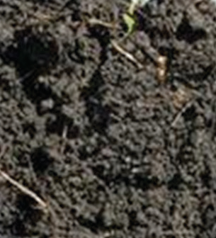
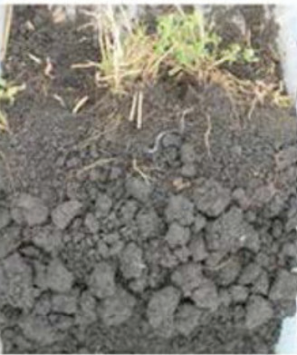
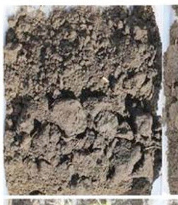
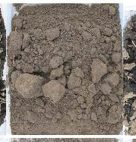
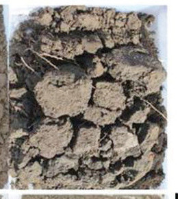
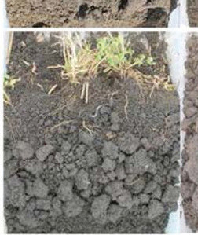
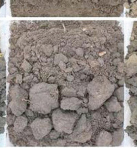
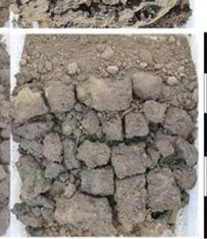

Activity 2.4
Soil structure
Soil is made up of sand, silt or clay particles that come together to form a group of particles known as soil aggregates (refer to Figure 2.7). Soil aggregates can be sandy, silty, clayey or loamy. A soil aggregate is like a basket of different types of soil particles. Soil structure is about how soil particles are arranged in an aggregate. An arrangement of soil particles in an aggregate can influence how the spaces between and within soil aggregates.








A well-structured soil has a network of tiny spaces. These spaces are between and within the soil aggregates. This network allows water and air to move around. Soil structure helps water and air to move easily, just like air moving through doors and windows in a house. In farming, soil structure is important because it helps plants to grow strong and healthy. It also stops the soil from being washed away when it rains or wind blows.
Poor farming practices can damage the soil structure. For example, if big and too much heavy machines are used, they can squash the soil. If we give the soil too much water or too many chemical fertilisers, it can also damage the soil structure. But we can keep the soil structure safe in many ways. One way is by changing the type of crop we grow each season. This is called crop rotation. Crop rotation involves growing a different type of crop on the same piece of land in each year or growing season, using a set pattern (refer to Figure 2.8). Another way is by using organic fertilisers instead of inorganic fertilisers. These are some recommended cultural practices which help to improve soil structure making it suitable for crop production.